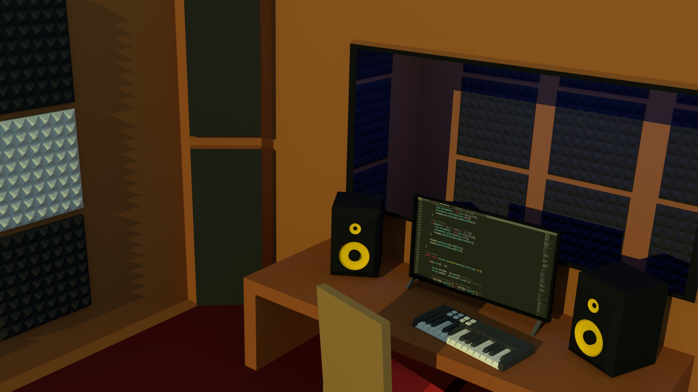

Joel Goodrum | Software Developer
BIO
Born in Brazil in a city called Londrina. Londrina means Little London. Since I was a young child, I loved playing video-games. My love for video games steered me towards being curious about computers. My first contact with programming was through a computer science course at Georgia State. In this course we learned how to manipulate data with Java. Recently, I have been working on software development with JavaScript, html and CSS. I have worked with a variety of tools outside of academia. Android Studio, a software I have used to code basic mobile applications in Java. Unity, a game engine where I had to code basic logic in C#. Blender, a game engine which I use mostly for 3d modeling. Photoshop, a graphic design software where I have used to design logos. FL Studio, a music composition and editing software where I have composed instrumentals and edited sound effects.

PROJECTS
Graphing Calculator
Software that allows user to input functions in the form y = x. The software outputs the y values and plots them on a graph. The software plots thousands of individual points giving the illusion that the graphs are curved or straight lines. This software plots precisely 14000 dots in less then half a second. Graphing Calculator was written in JavaFX using the JavaFX library.

Hospital Simulator
Software that simulates patients checking in and out of a hospital. The software allows the user to add as many patients as needed to a priority queue. But there are only three operation rooms available. The patients will be allocated to the operation room based on when they checked in and by their assigned priority.

iPhone Lock Screen
This project, one can see the current time on the lock screen of an iPhone. I designed the phone using html and CSS. I used JavaScript to output the date and time from the computer.
CarApp
CarApp is a program where the user can navigate a list of cars. When the user clicks on the type of car, the page shows the options available for that type. The user then can click on a specific model. After the user clicked on a model, the details of the car will show up. CarApp runs only on computers. Everything was coded in pure Java.
WizardRPG
In WizardRPG, one gets to strategically fight mystical creatures. All players have health and magic points. The player can attack or defend against his opponent. The opponent also has the options of defending or attacking. The player must bring the opponents magic or health points to zero in order to win. This game was programmed in html, CSS and JavaScript.